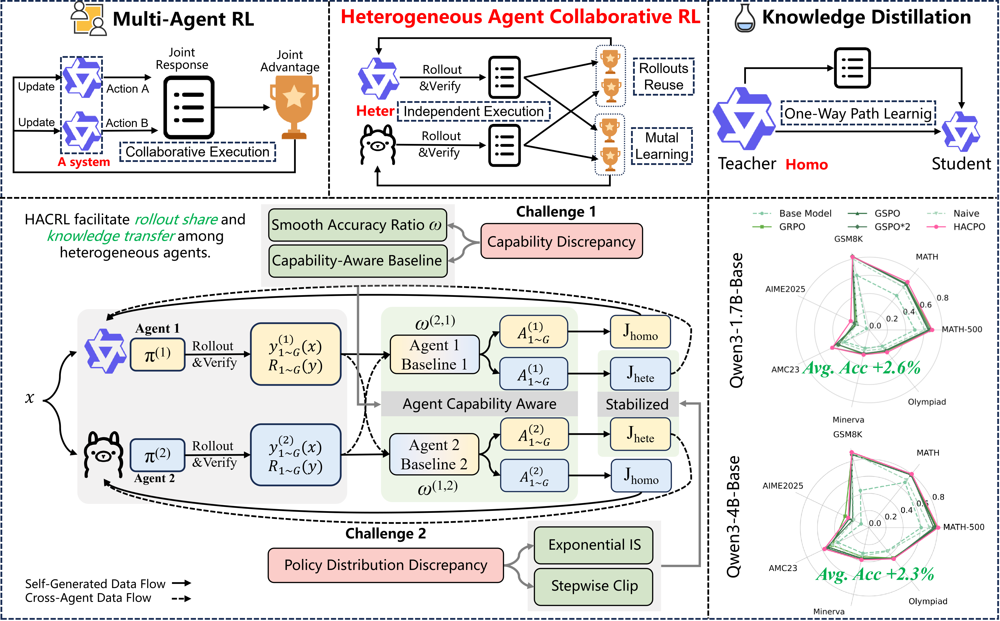
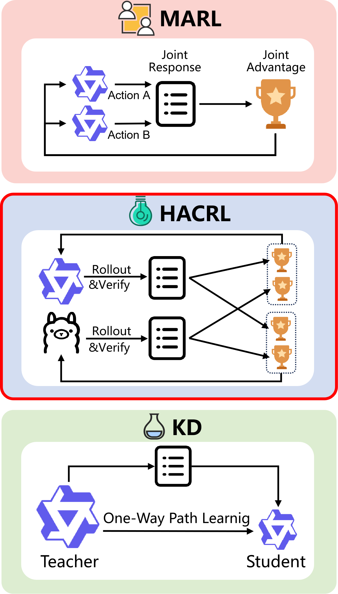
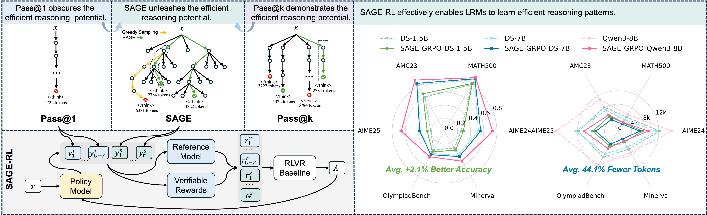

Agent-Capability-Aware Advantage Estimation: Removing this module leads to performance degradation due to systematic bias in advantage estimation caused by capability discrepancies.

Table 2. Ablation of Advantage Estimator
Accepted at NeurIPS 2026
TL;DR Heterogeneous models improve together through reciprocal rollout sharing during training. Each model runs independently at inference time.

[Practical Setting] A reasoning platform may maintain a small model for latency-sensitive requests and a larger model for requests requiring higher accuracy. Separate client deployments may also require different model families to fit their hardware and software interfaces. These models serve a shared task distribution, but face different latency, hardware, cost, and answer-quality requirements. HACRL aims to improve every model in this heterogeneous portfolio. Each inference instance invokes a single model, without communication with or access to its training partners.
[Background] In scenarios where multiple heterogeneous agents are to be optimized for the same task, vanilla Reinforcement Learning (RL) paradigms constrain each agent to execute tasks independently and update based solely on its own rollouts, they repeatedly generate trajectories and yield verifiable rewards, while these costly intermediate results are only utilized for self-training.
[Definition] We introduce a novel paradigm, termed Heterogeneous Agent Collaborative Reinforcement Learning (HACRL), to overcome the inefficiencies of isolated on-policy optimization. HACRL emphasizes independent execution with collaborative optimization: agents share verified rollouts during training to enhance one another, while operating independently at inference time.
HACRL differs fundamentally from existing paradigms:
(1) LLM-based Multi-Agent Reinforcement Learning (MARL).
MARL trains agents to coordinate and jointly solve tasks through interaction within a coupled multi-agent system. In contrast, HACRL does not require coordinated execution. In many practical scenarios, only a single agent is deployed at inference time; however, we still desire that this agent benefits from knowledge acquired from other agents during training.
(2) On-/Off-Policy Distillation.
Distillation typically follows a one-directional “teacher-to-student” paradigm, often among homogeneous agents. HACRL instead enables bidirectional mutual learning among heterogeneous agents, where each agent simultaneously acts as both a knowledge provider and a learner.
[Algorithm] We introduce Heterogeneous Agent Collaborative Policy Optimization (HACPO) to solve the HACRL problem. It enables rollout sharing to improve sample utilization and mutual knowledge transfer among heterogeneous agents. Four tailored mechanisms address capability discrepancies and policy distribution shifts, supported by theoretical analysis:
(1) Agent-Capability-Aware Advantage Estimation
(2) Model Capabilities Discrepancy Coefficient
(3) Exponential Importance Sampling
(4) Stepwise Clipping
[Performance] We evaluate HACPO across three types of heterogeneity, six two-agent combinations, and seven mathematical reasoning benchmarks. In the three representative pairings below, HACPO improves mean accuracy by 3.6 percentage points over GSPO×2, while using only half the rollout cost. A new three-agent experiment spans Qwen, Llama, and Gemma, with all three models improving on average. Distillation comparisons and five-seed evaluations provide further evidence for the benefits of mutual learning.

Figure 2. The significant differences among Multi-Agent RL, Knowledge Distillation, and the proposed HACRL. HACRL targets independent execution with collaborative optimization.
Typically, given one identical task, multiple agents execute RLVR optimization independently of one another.For essentially the same objective, they repeatedly generate trajectories and yield verifiable rewards, while these costly intermediate results are only utilized for self-training. We first formalize this setting as Heterogeneous Agent Collaborative Reinforcement Learning (HACRL), which captures collaborative policy optimization among heterogeneous agents that execute independently at inference time.
HACRL differs fundamentally from LLM-based multi-agent reinforcement learning (MARL), which trains agents to coordinate and jointly solve tasks through interaction.It is also distinct from knowledge distillation (KD), where a typically fixed teacher transfers knowledge to a student. In contrast, HACRL focuses on independent execution with collaborative optimization: agents share verified rollouts during training, yet operate independently at inference time without coordination.
Definition of HACRL Problem: We consider the Heterogeneous Agent Collaborative Reinforcement Learning (HACRL) framework with n LLM agents.
During training, for a query $q \sim \mathcal D$, each agent $k$ independently samples $G$ candidate responses from its policy: $$Y_k(q) = \{y_{k,1}, \dots, y_{k,G}\} \sim \pi_{\theta_k}(\cdot \mid q).$$ The corresponding verifiable rewards are: $$ \mathcal R_k(q) = \{ R(y_{k,i}) \mid i = 1,\dots,G \}.$$ The objective is to optimize each agent $k \in \{1, \dots, n\}$ by maximizing: $$J^{(k)} = J^{(k)}_{homo}(Y_k(q), R_k(q)) + J^{(k)}_{hete}(\{Y_j(q), R_j(q)\}_{j \neq k})$$ where $J^{(k)}_{homo}$ is computed using rollouts generated by agent $k$ itself, and $J^{(k)}_{hete}$ leverages rollouts generated by other heterogeneous agents.
We categorize heterogeneity among distinct LLM agents into three types:

Figure 1. In HACPO, shared rollouts from multiple heterogeneous agents are leveraged for collaborative training. Built upon vanilla RL Optimization, HACPO introduces four algorithmic innovations to mitigate capability and policy distribution discrepancy.
To solve the HACRL problem, we propose Heterogeneous Agent Collaborative Policy Optimization (HACPO), which introduces four tailored modifications to bridge capability and distribution discrepancies between heterogeneous agents. The paper provides theoretical analysis of capability-aware baseline calibration and learning from cross-agent rollouts.
We propose a capability-aware estimator that calibrates a separate advantage baseline for each learning agent. Cross-agent rewards are reweighted according to relative capability, allowing all responses to contribute while preserving agent-specific calibration.
The baseline $\hat{\mu}^{(k)}_t$ is computed by: $$\hat{\mu}^{(k)}_t = \frac{1}{nG} \sum_{j=1}^n \sum_{i=1}^G \omega^{(k,j)}_t R(y^{(j)}_{t,i})$$ where $\omega^{(k,j)}_t = P^{(k)}_t / P^{(j)}_t$ is the capability ratio ($P^{(k)}_t$ is agent $k$'s mean verifiable reward over the current training batch).
To encourage learning from stronger agents while being conservative with weaker ones, we use capability ratios in two complementary roles: (i) Baseline Calibration — $\omega_t^{(k,j)}$ rescales cross-agent rewards when estimating agent $k$'s baseline; (ii) Gradient Modulation — $\omega_t^{(j,k)}$ amplifies learning signals from stronger partners and attenuates those from weaker partners. The modulated advantage is:
Importance sampling is commonly used to correct distributional mismatches between samples generated by different policies. Following GSPO, we adopt a sequence-level importance ratio and extend it to the heterogeneous multi-agent setting. For combinations of heterogeneous agents with incompatible tokenizers, we detokenize the response into text and retokenize it using the target agent's tokenizer. Through sequence-level normalization, the slight length discrepancies arising from re-tokenization become negligible.
In heterogeneous settings, inter-agent policy discrepancies can be much larger than on-policy updates, making direct use of this ratio overly aggressive. To mitigate this issue, we introduce a non-gradient exponential reweighting to the importance sampling ratio. This design biases agent $k$ toward learning from agents whose output distributions are more aligned with its own, while reducing the impact of large cross-agent distribution shifts.
where $\text{sg}$ denotes the stop-gradient operator and $\alpha \geq 0$ controls the degree of conservativeness.
Cross-agent importance sampling ratios fluctuate irregularly both across steps and within a step. We first apply an asymmetric clipping bounds for cross-agent responses to ensure the cross-agent responses only be downweighted, but never upweighted. Then, we apply a stepwise clipping strategy to prevent cross-agent rollouts from dominating late-stage updates within a batch, thereby improving training stability.
We train on 7.5k math questions from the MATH dataset and evaluate on MATH500, MATH, GSM8K, AIME2025, AMC23, Minerva, and Olympiad. We study six two-agent combinations and one three-agent combination. The main RLVR comparisons use three types of baselines:
HACPO demonstrates consistent and superior performance improvements across three distinct heterogeneity settings:
Higher accuracy with half the rollout cost. HACPO improves every model's average score in these three representative pairings, with a mean gain of 3.6 percentage points over GSPO×2.
| Model / heterogeneity | GSPO×2 | HACPO | Gain (pp) |
|---|---|---|---|
| Qwen3-4BState | 69.1 | 75.5 | +6.4 |
| Qwen3-4B-InstructState | 79.9 | 81.8 | +1.9 |
| Qwen3-1.7B-BaseSize | 46.5 | 49.3 | +2.8 |
| Qwen3-4B-BaseSize | 57.5 | 60.1 | +2.6 |
| Qwen3-4B-BaseModel | 57.5 | 59.7 | +2.2 |
| Llama3.2-3B-InstructModel | 33.4 | 39.0 | +5.6 |
| Model / method | MATH500 | MATH | GSM8K | AIME2025 | AMC23 | Minerva | Olympiad | AVG |
|---|---|---|---|---|---|---|---|---|
| Qwen3-4B and Qwen3-4B-Instruct (Heterogeneous State) | ||||||||
| 4B | 80.2 | 83.6 | 90.7 | 33.5 | 65.0 | 39.0 | 52.4 | 63.5 |
| 4B (GRPO) | 88.0 | 88.9 | 91.8 | 58.2 | 77.5 | 38.6 | 59.2 | 71.7 |
| 4B (GSPO) | 85.4 | 87.0 | 92.5 | 48.5 | 67.5 | 41.2 | 56.4 | 68.4 |
| 4B (GSPO×2) | 87.6 | 87.5 | 92.3 | 52.2 | 67.5 | 39.0 | 57.9 | 69.1 |
| 4B (Naive) | 72.8 | 73.7 | 89.1 | 37.8 | 60.0 | 35.3 | 39.4 | 58.3 |
| 4B(HACPO) | 91.0 | 90.5 | 93.3 | 62.2 | 85.0 | 42.3 | 64.3 | 75.5 |
| 4B-Instruct | 93.8 | 93.7 | 93.6 | 69.6 | 85.0 | 44.1 | 72.2 | 78.9 |
| 4B-Instruct (GRPO) | 93.0 | 93.3 | 93.3 | 67.6 | 87.5 | 43.0 | 72.0 | 78.5 |
| 4B-Instruct (GSPO) | 93.8 | 94.0 | 93.9 | 72.0 | 90.0 | 43.0 | 72.6 | 79.9 |
| 4B-Instruct (GSPO×2) | 93.2 | 93.9 | 94.2 | 74.0 | 90.0 | 43.0 | 71.1 | 79.9 |
| 4B-Instruct(Naive) | 84.4 | 84.5 | 93.6 | 54.7 | 72.5 | 39.0 | 55.2 | 69.1 |
| 4B-Instruct(HACPO) | 94.8 | 94.3 | 94.6 | 75.7 | 95.0 | 45.2 | 73.2 | 81.8 |
| Qwen3-1.7B-Base and Qwen3-4B-Base (Heterogeneous Size) | ||||||||
| 1.7B-Base | 50.0 | 48.3 | 61.6 | 3.3 | 30.0 | 20.6 | 22.9 | 33.8 |
| 1.7B-Base (GRPO) | 68.2 | 65.2 | 82.4 | 16.0 | 37.5 | 27.2 | 29.8 | 46.6 |
| 1.7B-Base (GSPO) | 64.8 | 64.1 | 82.6 | 14.8 | 45.0 | 27.2 | 28.7 | 46.7 |
| 1.7B-Base (GSPO×2) | 66.4 | 65.0 | 82.9 | 17.7 | 37.5 | 26.5 | 29.3 | 46.5 |
| 1.7B-Base (Naive) | 60.8 | 60.1 | 79.8 | 14.7 | 32.5 | 23.5 | 26.3 | 42.5 |
| 1.7B-Base(HACPO) | 69.0 | 67.4 | 82.2 | 22.5 | 45.0 | 27.9 | 31.4 | 49.3 |
| 4B-Base | 61.0 | 67.6 | 44.5 | 10.0 | 40.0 | 30.8 | 34.7 | 41.2 |
| 4B-Base (GRPO) | 79.6 | 78.8 | 88.5 | 30.7 | 47.5 | 34.9 | 45.4 | 57.9 |
| 4B-Base (GSPO) | 78.2 | 78.7 | 87.7 | 25.0 | 52.5 | 36.8 | 46.0 | 57.8 |
| 4B-Base (GSPO×2) | 75.6 | 79.4 | 87.3 | 20.8 | 55.0 | 38.2 | 46.3 | 57.5 |
| 4B-Base (Naive) | 70.8 | 71.2 | 89.5 | 19.6 | 47.5 | 34.2 | 35.4 | 52.6 |
| 4B-Base (HACPO) | 80.8 | 80.1 | 90.3 | 26.7 | 57.5 | 38.6 | 46.7 | 60.1 |
| Qwen3-4B-Base and Llama3.2-3B-Instruct (Heterogeneous Model) | ||||||||
| Qwen3 | 61.0 | 67.6 | 44.5 | 10.0 | 40.0 | 30.8 | 34.7 | 41.2 |
| Qwen3 (GRPO) | 79.6 | 78.8 | 88.5 | 30.7 | 47.5 | 34.9 | 45.4 | 57.9 |
| Qwen3 (GSPO) | 78.2 | 78.7 | 87.7 | 25.0 | 52.5 | 36.8 | 46.0 | 57.8 |
| Qwen3 (GSPO×2) | 75.6 | 79.4 | 87.3 | 20.8 | 55.0 | 38.2 | 46.3 | 57.5 |
| Qwen3 (Naive) | 73.4 | 71.2 | 89.5 | 14.3 | 55.0 | 34.2 | 35.4 | 52.6 |
| Qwen3 (HACPO) | 78.6 | 78.3 | 92.1 | 26.8 | 60.0 | 37.9 | 44.2 | 59.7 |
| Llama3.2 | 26.7 | 44.1 | 78.8 | 0.0 | 20.0 | 16.9 | 15.8 | 28.9 |
| Llama3.2 (GRPO) | 50.2 | 50.7 | 81.4 | 0.0 | 25.0 | 19.9 | 17.4 | 34.9 |
| Llama3.2 (GSPO) | 51.2 | 50.1 | 81.2 | 5.4 | 22.5 | 18.4 | 17.0 | 35.1 |
| Llama3.2 (GSPO×2) | 48.8 | 49.8 | 82.9 | 0.0 | 17.5 | 18.8 | 15.9 | 33.4 |
| Llama3.2 (Naive) | 40.6 | 40.7 | 73.4 | 0.0 | 22.5 | 17.7 | 10.7 | 29.4 |
| Llama3.2 (HACPO) | 56.6 | 54.8 | 82.6 | 5.4 | 35.0 | 17.6 | 20.8 | 39.0 |
The main paper reports these three pairings; three additional two-agent combinations are reported in the appendix.
We jointly train Qwen3-1.7B-Base, Llama3.2-1B-Instruct, and Gemma3-1B-Instruct. GSPO×3 triples the single-agent rollout budget to match the number of training rollouts available to each HACPO agent through the shared pool. All three models improve their average scores over GSPO×3, by 1.6, 1.8, and 1.9 percentage points, respectively.
| Model | GSPO×3 | HACPO | Gain (pp) |
|---|---|---|---|
| Qwen3-1.7B-Base | 47.1 | 48.7 | +1.6 |
| Llama3.2-1B-Instruct | 22.0 | 23.8 | +1.8 |
| Gemma3-1B-Instruct | 28.7 | 30.6 | +1.9 |
| Model / method | MATH500 | MATH | GSM8K | AIME2025 | AMC23 | Minerva | Olympiad | AVG |
|---|---|---|---|---|---|---|---|---|
| Qwen3-1.7B-Base | ||||||||
| GSPO | 64.8 | 64.1 | 82.6 | 14.8 | 45.0 | 27.2 | 28.7 | 46.7 |
| GSPO×3 | 66.4 | 66.8 | 83.3 | 13.3 | 40.0 | 30.2 | 29.6 | 47.1 |
| HACPO | 69.0 | 68.8 | 82.4 | 17.7 | 42.5 | 28.7 | 31.7 | 48.7 |
| Llama3.2-1B-Instruct | ||||||||
| GSPO | 35.6 | 34.6 | 52.3 | 2.1 | 12.5 | 6.6 | 8.8 | 21.8 |
| GSPO×3 | 34.0 | 35.4 | 52.0 | 0.0 | 17.5 | 7.7 | 7.7 | 22.0 |
| HACPO | 34.0 | 36.3 | 56.3 | 3.3 | 20.0 | 8.1 | 8.8 | 23.8 |
| Gemma3-1B-Instruct | ||||||||
| GSPO | 45.2 | 45.1 | 61.6 | 3.3 | 22.5 | 5.2 | 15.0 | 28.3 |
| GSPO×3 | 47.2 | 45.0 | 62.3 | 3.3 | 22.5 | 4.0 | 16.7 | 28.7 |
| HACPO | 49.6 | 46.3 | 62.6 | 6.7 | 27.5 | 5.9 | 15.8 | 30.6 |
Gains vary across individual benchmarks; all three models benefit on average.
On-policy distillation (OPD) and OPD+GRPO update only Qwen3-1.7B-Base using a frozen Qwen3-4B-Base teacher. HACPO (Frozen Strong) also freezes the 4B partner. Full HACPO updates both models, allowing both policies and their shared rollouts to evolve during training.
| Method | Models updated | 1.7B AVG (%) |
|---|---|---|
| OPD | 1.7B only | 40.6 |
| OPD+GRPO | 1.7B only | 40.8 |
| HACPO (Frozen Strong) | 1.7B only | 45.2 |
| HACPO | Both models | 49.3 |
Full HACPO reaches 49.3%, compared with 45.2% for its frozen-strong variant. These results support the benefit of joint optimization beyond one-way transfer from a fixed base-model teacher in this setting.
We also test a sequential strategy: first train Qwen3-4B-Base with GSPO×2, freeze it, and then distill Qwen3-1.7B-Base with OPD+GRPO. The final portfolio contains the trained 4B teacher and the distilled 1.7B model. HACPO improves both models' average scores over this strategy.
| Model | Train-then-Distill | HACPO | Gain (pp) |
|---|---|---|---|
| Qwen3-1.7B-Base | 46.0 | 49.3 | +3.3 |
| Qwen3-4B-Base | 57.5 | 60.1 | +2.6 |
| Training strategy | Time to obtain both models |
|---|---|
| Train-then-Distill | 6h 26m (4h 01m training + 2h 25m distillation) |
| HACPO | 5h 31m |
HACPO obtains the complete two-model portfolio 55 minutes faster, reducing training time by 14.2% in this comparison.
The implementation loads, runs, and offloads models sequentially during rollout generation and optimization, allowing collaboration without keeping all models resident in GPU memory simultaneously.
On 627 of 7,424 problems (8.4%), Qwen3-1.7B-Base has a higher sampled success rate than Qwen3-4B-Base. Here, sampled success rate is the fraction of a model's collected rollouts for a given problem that pass verification.
We also observe problems where the 4B model samples no correct rollout while the 1.7B model samples at least one, supplying verified solutions absent from its stronger partner's own rollouts. Together with the 4B model's performance gains, this supports the value of complementary solutions from a weaker model.
We reevaluate the Qwen3-1.7B-Base/Qwen3-4B-Base pair on MATH500 using seeds 0, 1, 42, 1337, and 3407. The evaluation response-length limit is 8192 tokens, matching the main results; the training limit remains 4096 tokens. HACPO outperforms both GSPO and GSPO×2 in every seed-matched run for both models.
| Model / method | Mean ± sample SD (%) |
|---|---|
| Qwen3-1.7B-Base / HACPO | 68.06 ± 0.71 |
| Qwen3-1.7B-Base / GSPO | 64.48 ± 0.33 |
| Qwen3-1.7B-Base / GSPO×2 | 65.22 ± 0.70 |
| Qwen3-4B-Base / HACPO | 79.90 ± 0.74 |
| Qwen3-4B-Base / GSPO | 77.04 ± 0.67 |
| Qwen3-4B-Base / GSPO×2 | 77.02 ± 0.85 |
| Model / method | Seed 0 | Seed 1 | Seed 42 | Seed 1337 | Seed 3407 | Mean ± SD |
|---|---|---|---|---|---|---|
| Qwen3-1.7B-Base / HACPO | 68.0 | 68.2 | 69.0 | 68.1 | 67.0 | 68.06 ± 0.71 |
| Qwen3-1.7B-Base / GSPO | 64.7 | 64.0 | 64.8 | 64.6 | 64.3 | 64.48 ± 0.33 |
| Qwen3-1.7B-Base / GSPO×2 | 64.8 | 65.1 | 66.4 | 65.2 | 64.6 | 65.22 ± 0.70 |
| Qwen3-4B-Base / HACPO | 78.8 | 80.3 | 80.8 | 79.7 | 79.9 | 79.90 ± 0.74 |
| Qwen3-4B-Base / GSPO | 76.5 | 76.9 | 78.2 | 76.8 | 76.8 | 77.04 ± 0.67 |
| Qwen3-4B-Base / GSPO×2 | 76.9 | 77.4 | 75.6 | 77.7 | 77.5 | 77.02 ± 0.85 |
The mean gains over GSPO×2 are 2.84 percentage points for 1.7B and 2.88 for 4B.
Main results, the three-agent and distillation comparisons, these seed evaluations, and the advantage-estimator and capability-coefficient ablations use an 8192-token evaluation limit. Other ablations retain their actual 4096-token limit.
We validate the necessity of each component through extensive ablation studies.
Agent-Capability-Aware Advantage Estimation: Removing this module leads to performance degradation due to systematic bias in advantage estimation caused by capability discrepancies.
Table 2. Ablation of Advantage Estimator
Model Capabilities Discrepancy Coefficient: Essential for modulating gradients—amplifying signals from stronger agents while attenuating noise from weaker ones.

Table 3. Ablation of Model Capabilities Discrepancy Coefficient
Exponential Importance Sampling: Examining the impact of different values of $\alpha$ on the performance of HACPO.

Table 4. Impact of Exponential Importance Sampling ($\alpha$)
Stepwise Clipping: Crucial for stabilizing collaborative learning. Without it, high-variance cross-agent responses can destabilize the training process.

Figure 4. The Ablation of Stepwise Clipping. Removing clipping or the stepwise schedule leads to instability or suboptimal convergence.
If you find our work useful, please cite:
@misc{zhang2026heterogeneousagentcollaborativereinforcement,
title={Heterogeneous Agent Collaborative Reinforcement Learning},
author={Zhixia Zhang and Zixuan Huang and Gongxun Li and Huaiyang Wang and Chengyi Yuan and Xin Xia and Deqing Wang and Fuzhen Zhuang and Shuai Ma and Ning Ding and Yaodong Yang and Jianxin Li and Yikun Ban},
year={2026},
eprint={2603.02604},
archivePrefix={arXiv},
primaryClass={cs.LG},
url={https://arxiv.org/abs/2603.02604},
}